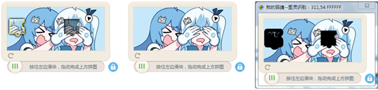

| 命令名称 | Filter_KeepColors 颜色相似保留 |
| 命令功能 | (针对彩色图像处理)两图像数据之间的相似颜色进行提取，并返回匹配到的点数 |
| 语法格式 | Num = TURING.Filter_KeepColors(ImgData1, ImgData2, Similarity) |
| 参数说明 |
ImgData1：整数型，备份图像编号1 ImgData2：整数型，备份图像编号2 Similarity：整数型，颜色相似度（范围：0.1~1） |
| 返回值 | Num：整数型，比对匹配上的相似点数量 |
| 按键精灵 |
复制代码
'获取文件图像数据1
Call TURING.Pixel_FromPicture("C:\问题.bmp")
'设置备份图像内容1
Call TURING.Draw_Backups(1)
'获取文件图像数据2
Call TURING.Pixel_FromPicture("C:\答案选项.bmp")
'设置备份图像数据2
Call TURING.Draw_Backups(2)
'进行相似颜色提取处理
TracePrint TURING.Filter_KeepColors(1, 2)
'显示图像
Call TURING.Pixel_Preview()
|
| 滤镜效果 |  |